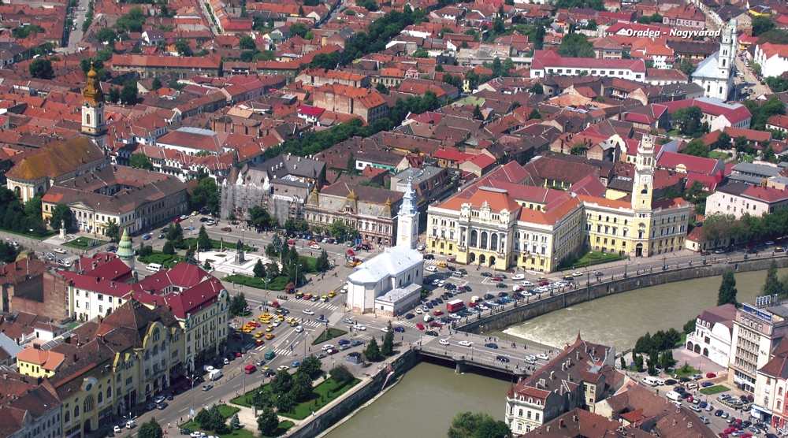

-1-MasterItem.svg)
Stories of Westminster United Church & its People / Page
230
Table
of Contents
of the babies. She said that she would never had thought of adopting any of the
babies she saw
the previous year, because they would all have psychological problems resulting
from neglect. But
in one year, the fact that babies were being held to be fed, cuddled and played
with, meant that they
seemed like normal healthy children who would grow up with a future! She also
marvelled at the
difference in the hospital personnel. The results of this program that they had
witnessed, greatly
influenced their attitudes, so that they started treating the babies as people,
rather than seeing the
hospital as a warehouse to shelter them. Finally, Lorraine was also pleased to
see how the money
which had been collected here in the Okanagan was providing salaries for good
Romanian workers
who were making all the difference to the work there. Dwight said that they had
become
one of the Foundation’s most important sources of funding!
Of course, Lorraine was talking about
going back to Oradea again, and this time,
Bob was going to go with her. Plans had
not been set, but the talk was of doing a
vacation trip around eastern Europe
when the volunteer work was done.
Unfortunately, Lorraine’s death in 2008
put an end to that dreaming. One positive
final note was that Lorraine’s obituary
named the Foundation in Romania, as one
recipient of memorial gifts, and several
thousand dollars were contributed. The
Foundation used the money to renovate
and furnish a large room in a church in one of the Roma villages they were
working in, near Oradea.
To the room were added washrooms and showers and it was used to gather the
village children
for activities, socializing, and Christian education. The room was dedicated in
Lorraine’s
memory, and that would have pleased her immensely.

Our Next Four Ministers